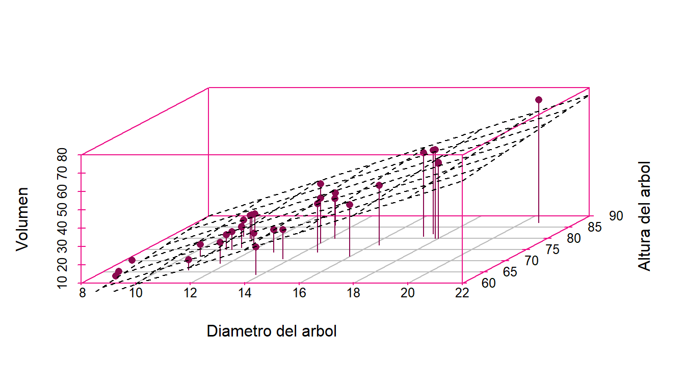

Introducción
El modelo de regresión lineal simple ajusta una variable explicativa a una variable respuesta; Por su parte, el Modelo de regresión lineal múltiple busca hallar el mejor ajuste con dos o más variables regresoras. Es decir, la variable respuesta \(\underline{Y}\) depende de \(k\) regresores de la forma:
\[ \underline{Y}=\beta_{0}+\beta_{1}x_{1}+\beta_{2}x_{2}+ \ldots +\beta_{k}x_{k}+\epsilon \]
En primera instancia no parece ser un gran cambio, sin embargo, es de gran importancia ya que de esta forma se puede estimar de una mejor manera un evento aleatorio, pues en general, un suceso no depende de sólo una acción o variable, sino que es resultado de una serie de diversos eventos o variables.
Es importante mencionar que en un modelo de regresión múltiple se deja de ajustar una línea recta a los datos, en cambio se ajusta un hiperplano.

El “scatterplot” de arriba, se realizó con la base precargada en \(R\), \("trees"\), los datos que componen la muestra se encuentran en un vector de dimensión 3, la cual busca relacionar la variable \(\underline{Y}\), con dos variables explicativas \(X_{1}\) y \(X_{2}\), en este caso, la variable \(\underline{Y}\) hace referencia al volumen de un árbol y la variable \(X_{1}\) hace referencia al diámetro del tronco del árbol y \(X_{2}\) denota la altura del árbol, se observa que existe una tendencia, la cual es representada mediante el hiperplano de regresión marcado, en la cual a menor diámetro y menor altura, el volumen del árbol tiende a disminuir.
Debido a que se trabaja con cierto error \(\epsilon\) en el ajuste de la regresión, es conveniente suponer que se cumplen lo siguientes supuestos:
Definición 3.1 (Supuestos del modelo de regresión múltiple)
El error \(\epsilon_{i}\) en el modelo de regresión lineal múltiple cumple:
\(\mathbf{E}[\epsilon_{i}]=0.\)
\(Var(\epsilon_{i})=\sigma^2.\)
\(Cov(\epsilon_{i},\epsilon_{j})=0, \ \ i \neq j \ \ \forall \ \ i= 1,2,\ldots,n; \ \ j= 1,2,\ldots,n.\)
Al cumplirse estos supuestos es posible calcular la esperanza y varianza de la variable respuesta \(\underline{Y}\) dado un conjunto de valores \(x_{1},x_{2},\ldots,x_{k}.\)
Teorema 3.1 Sea una variable de interés \(\underline{Y}\), llamada dependiente, relacionada con dos o más variables explicativas o también llamadas regresoras \(x_{1},x_{2},\ldots,x_{k}\), entonces:
a) \(\mathbf{E}[\underline{Y}]= \beta_{0}+\beta_{1}x_{1}+\beta_{2}x_{2}+ \ldots + \beta_{k}x_{k}.\)
b) \(\textbf{Var}(\underline{Y})= \sigma^2.\)
Demostración:
a) Para la esperanza de \(\underline{Y}\) se tiene:
\[\mathbf{E}[\underline{Y}]=\mathbf{E}[\beta_{0}+\beta_{1}x_{1}+\beta_{2}x_{2}+ \ldots +\beta_{k}x_{k}+\epsilon].\] La estimación es sobre \(\underline{Y},\) como \(\beta_{0},\beta_{1},\beta_{2},\ldots,\beta_{k}\) son constantes; \(x_{1},x_{2}, \ldots,x_{k}\) son los valores dados, por lo que:
\[\mathbf{E}[\underline{Y}]=\beta_{0}+\beta_{1}x_{1}+\beta_{2}x_{2}+ \ldots +\beta_{k}x_{k}+\mathbf{E}[\epsilon].\]
\[=\beta_{0}+\beta_{1}x_{1}+\beta_{2}x_{2}+ \ldots +\beta_{k}x_{k}+0\] \[\therefore \mathbf{E}[\underline{Y}]= \beta_{0}+\beta_{1}x_{1}+\beta_{2}x_{2}+ \ldots + \beta_{k}x_{k}. \blacksquare\]
b) Para la varianza de \(\underline{Y}\) se tiene:
\[Var(\underline{Y})=Var\left( \beta_{0}+\beta_{1}x_{1}+\beta_{2}x_{2}+ \ldots + \beta_{k}x_{k}+ \epsilon\right).\] La estimación es sobre \(\underline{Y}\), \(\beta_{0},\beta_{1},\beta_{2},\ldots,\beta_{k}\) son constantes; \(x_{1},x_{2},\ldots,x_{k}\) son valores dados, por lo que cumple que:
\[Var(\underline{Y})=0+0+0+\ldots+0+Var(\epsilon)\] \[\therefore Var(\underline{Y})=\sigma^2.\blacksquare\]